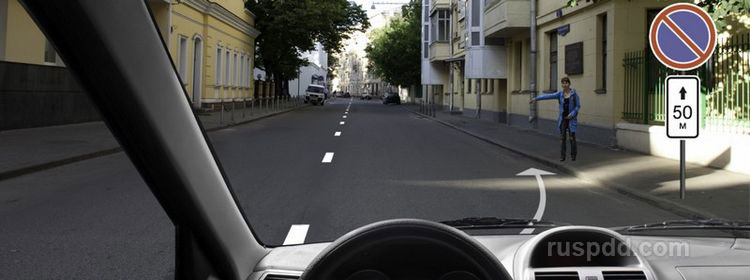
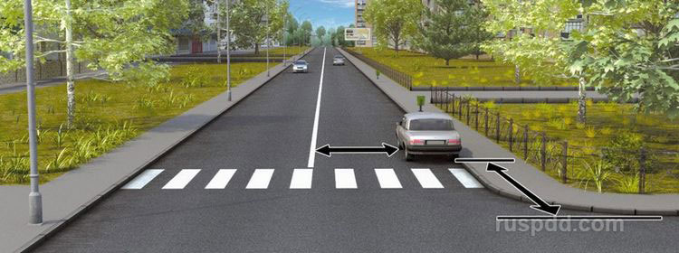

Можно ли Вам остановиться в указанном месте для посадки пассажира?
Нельзя.
Можно, если Вы управляете такси.
Можно.

В каком случае водителю разрешается поставить автомобиль на стоянку в указанном месте?
Только если расстояние до сплошной линии разметки не менее 3 м.
При соблюдении обоих перечисленных условий.
Только если расстояние до края пересекаемой проезжей части не менее 5 м.
Сброс